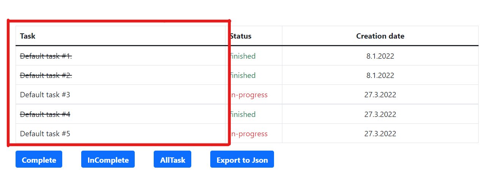
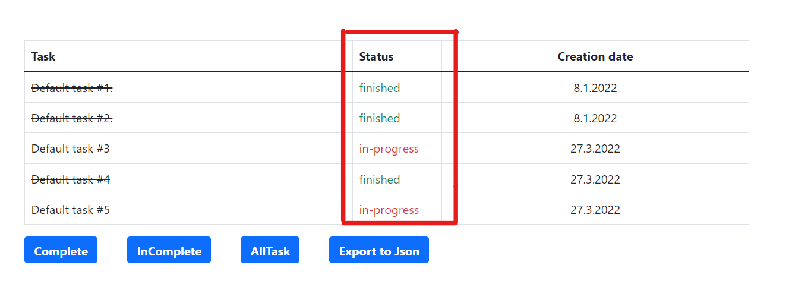
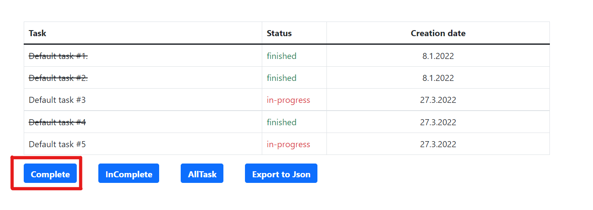
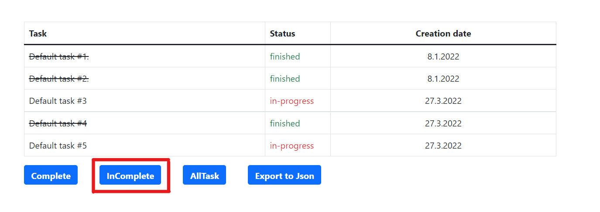

Obsah
Tato aplikace je navržena pro administrátory, kteří tak mohou zadávat úkoly běžným uživatelům. Administrátoři mohou zadávat úkoly, ožnačit je jako hotové (popřípadě nehotové), přejmenovat úkoly a smazat úkoly. Obě tyto skupiny (Administrátoři a uživatelé) mohou úkoly sledovat, ale také zobrazovat pouze splněné nebo nesplněné. V poslení řadě obě skupiny mohou úkoly zobrazit a stáhnout ve formátu Json.
Pro vstup do aplikace knikněte na tlačítko "continue as host". Není potřeba vyplňovat žádné údaje. Po kliknutí na toto tlačítko vstoupíte přímo do aplikce.

Pro administrátorský přístup je potřeba vyplnit požadované 2 kolonky. Do kolonky username zapište svoje přihlašovací jméno a do kolonky password napište svoje heslo. Po vyplnění klikněte na tlačitko "sign in". Poté budete přesměrování přímo do aplikace a budou zpřístupněny všechny administrátorské funkce. V případě, že zadáte špátné uživatelské jméno nebo heslo, vyskočí chybové okénko a upozorní vás na to.
Obsah
Toto je hlavní strana aplikace. Zde můžete vidět tlačítko, tabulku a čtyři další tlačítka pod tabulkou.
Tato tabulka obsahuje tři sloupce a počet řádků odpovídající počtu úkolů.
V prvním sloupci je název zadaného úkolu. Pokud je název úkolu škrtnutý, úkol je splněný pokud není skrtnutý, úkol není splněný. Více o splněných a nesplněných úkolech v další sekci.

Ve druhém sloupci je stav zadaného úkolu tzn. "in-progress" (v procesu neboli zatím nesplěné) nebo "finished" (dokončený).

Ve třetím sloupci se nachází datum, kdy byl úkol zadán.

Při stisku tohoto tlačítka se v tabulce zobrazí pouze splněné úkoly (úkoly které mají status "finished").

Při stisku tohoto tlačítka se v tabulce zobrazí pouze nesplněné úkoly (úkoly které mají status "in-progress").

Při stisku tohoto tlačítka se v tabulce zobrazí všechny úkoly (splněné i nesplněné). Toto je vhodné použít především v případě, že bylo předtím stisknuto tlačítko "Complete" nebo "InComplete".

Při stisku tohoto tlačítka se všechny úkoly v tabulce zobrazí na nové kartě prohlížeče jako data v Json formátu, zároveň se tato data stáhnou do lokálního úložiště vašeho zařízení jako soubor typu Json.

Všechny úkoly se nacházejí v tabulce na hlavní straně aplikace, úkol, který je potřeba splnit poznáte tak, že ve druhém sloupci je na jeho příslušném řádku atribut "in-progress".
Úkoly, které je potřeba splnit, lze také poznat podle toho, že nemají přeškrtnutý název (ve sloupci "Task").